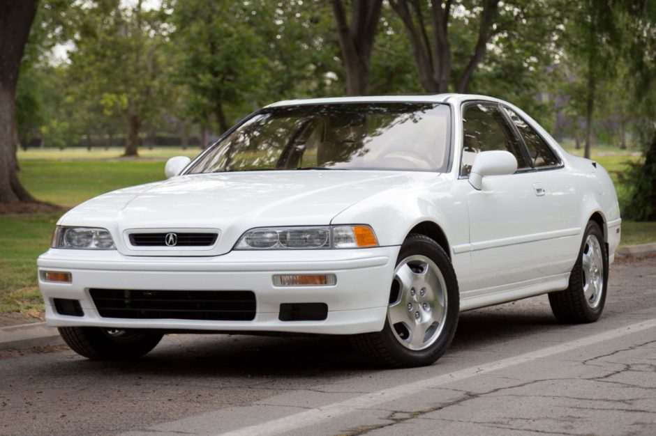

Honda was created on September 24, 1948, in Hamamatsu, Shizuoka, and Japan.
When it comes to the car scene, Honda's are usually the laughing stock of cars because of there extremely loud fart-can exhaust and
there Race Inspired Cosmetic Enhancements(R.I.C.E.) mods. However, founder Soichiro Honda created some of the most realiable cars in the car market.
Another great thing about Honda's is that there rarely ever seen in gas stations, due to there great MPG.
Honda was created on September 24, 1948, in Hamamatsu, Shizuoka, and Japan.
When it comes to the car scene, Honda's are usually the laughing stock of cars because of there extremely loud fart-can exhaust and
there Race Inspired Cosmetic Enhancements(R.I.C.E.) mods. However, founder Soichiro Honda created some of the most realiable cars in the car market.
Another great thing about Honda's is that there rarely ever seen in gas stations, due to there great MPG.
Honda ホンダ Acura アキュラ
Background Information
Honda was created on September 24, 1948, in Hamamatsu, Shizuoka, and Japan.
When it comes to the car scene, Honda's are usually the laughing stock of cars because of there extremely loud fart-can exhaust and
there Race Inspired Cosmetic Enhancements(R.I.C.E.) mods. However, founder Soichiro Honda created some of the most realiable cars in the car market.
Another great thing about Honda's is that there rarely ever seen in gas stations, due to there great MPG.
Acura was created on March 27, 1986,in the United States and Canada.
Thirty-eight years later after Honda was first founded, Acura was born. Acura was created to give Honda lovers a more luxurious
car,but still offer the same realiability and MPG as Honda's. While Acura's offer heated leather seats and many more luxury attributes, parts
and gas is more expensive than Honda's.